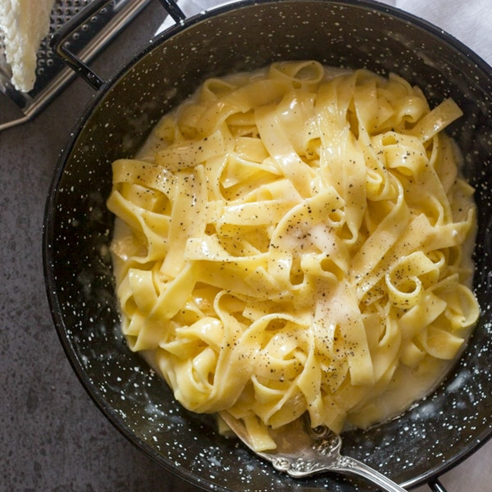
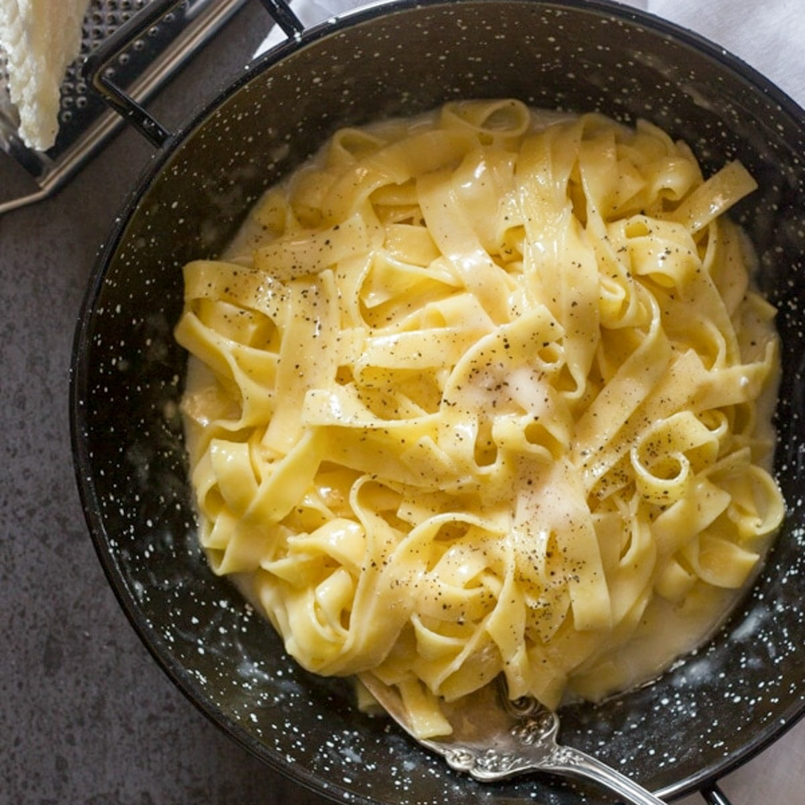

History of Pasta
Pasta was first traced back to central asia thousands of years ago but now you can get them almost anywhere.

Pasta was first traced back to central asia thousands of years ago but now you can get them almost anywhere.
There are alot of kinds of pasta like: Farfelle, Angel hair, Spaghetti, and Fettuccine.